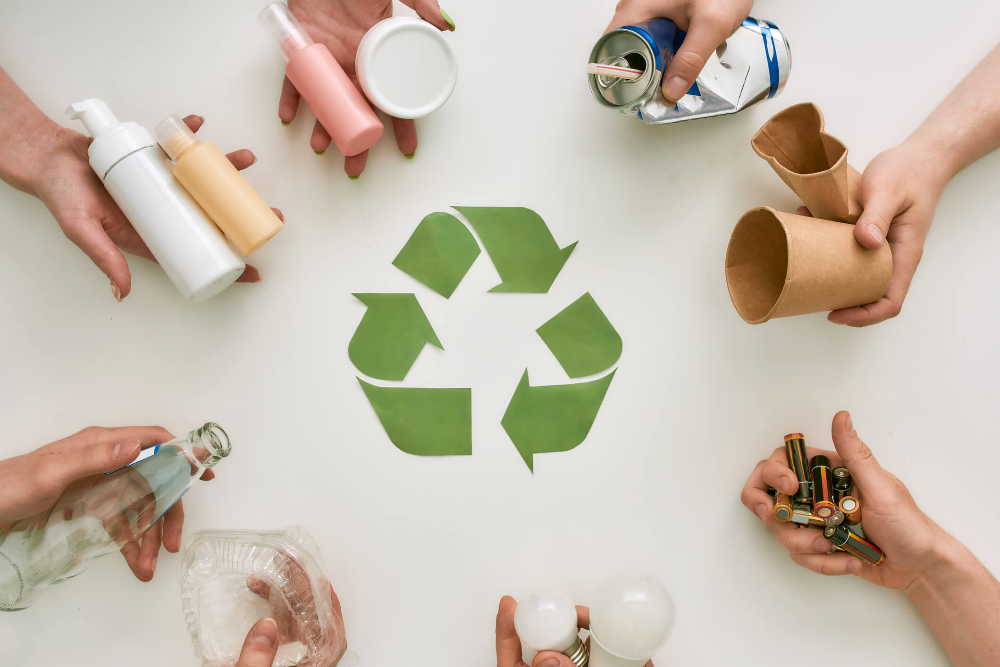
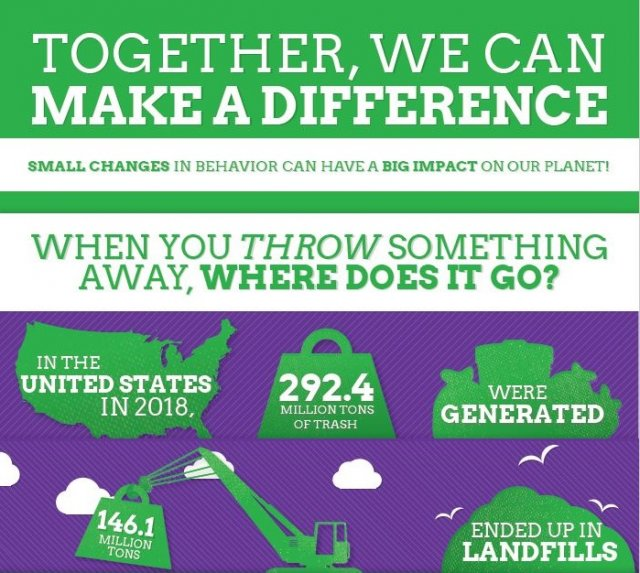

Redwood Materials' New Specialty: Recycling EV Batteries Damaged By Fire And Hurricanes
Ways to recycle EV Batteries that have been damaged by natural disasters
Recycling is a very important topic in today's society, and its significance cannot be overstated. It plays a crucial role in protecting the Earth from the harmful effects of pollution and waste. Every item that we recycle reduces the amount of trash that ends up in landfills or oceans, helping to keep our environment cleaner and healthier. By recycling, we can conserve precious natural resources, reduce the need for raw materials, and cut down on energy consumption. We all have the power to make a difference, and by taking the extra step to recycle every day, we contribute to a more sustainable future. Even small actions, when practiced by many, can lead to significant positive change for the planet and all living creatures who call it home.
People around the world will feel the effects of the lack of recycling. When recycling is not done, trash one creates is sent to landfills. These landfills create harmful emissions, which hurts the atmosphere, and in turn hurts us as humans. Animals were also be affected as well. These emissions will harm their habitats in nature and they will eventually be destroyed. Overall, Without recycling, the world will run out of finite resources.
People all around the world can contribute to the Earth just by recycling. It's an easy and effective way for everyone to make a positive impact. We can do it in our daily lives with something as simple as a water bottle or plastic container. By choosing to recycle, we help reduce waste, conserve resources, and prevent pollution from harming our ecosystems. Recycling doesn't require much effort, yet it can have a huge effect on the health of our planet. The more we all participate, the greater difference we can make in creating a cleaner, greener world for future generations.
Out of all the tons of trash being generated, not all of it ends up in landfills. While recycling helps, we can do more to reduce the amount of waste being produced in the first place. We should aim to minimize waste by making conscious choices in our daily lives. One of the most effective steps we can take is to use reusable items whenever possible—whether it's a water bottle, shopping bags, or food containers. By choosing reusable products over single-use plastics, we reduce our reliance on disposable items and decrease the demand for new resources. Small changes in our habits can add up to a significant impact on reducing waste and protecting the environment.
Join the movement to help save our planet! Sign our petition today to show your support for recycling programs that reduce waste, conserve natural resources, and protect our environment for future generations. By adding your name, you're not just supporting a cause, but you're becoming part of a powerful force that will push for meaningful change. Together, we will create a greater and unified effort to hold our leaders accountable and demand that they take action on environmental issues. It's time to make recycling and sustainability a priority, and with your help, we can apply the pressure needed to ensure that our politicians hear us loud and clear. Every signature brings us one step closer to a cleaner, greener future for all.
🖊️ Jake from Harlem supports this.
🖊️ Chad from Long Island supports this.
🖊️ Alan from Brooklyn supports this.
Ways to recycle EV Batteries that have been damaged by natural disasters
Changes in the international glass market has sent glass to the landfill
Boise residents are unable to recycle because of lack of infrastructure